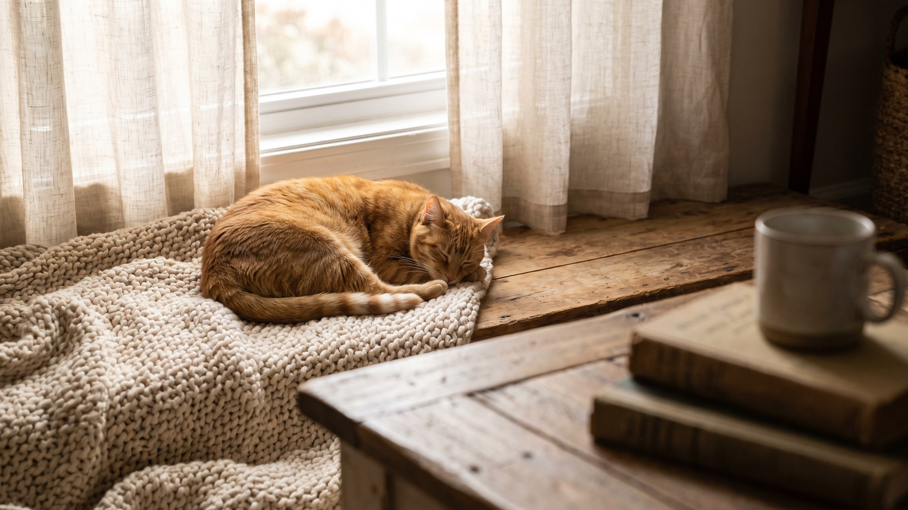

Выходишь с кухни и чуть не наступаешь на кошку, которая растянулась прямо поперёк прохода. Она смотрит с видом человека, у которого всё под контролем. Так и есть: это осознанный выбор. За привычкой занимать дверные проёмы стоит несколько понятных причин. Ниже разберём каждую и расскажем, как обустроить жильё, чтобы кошке было комфортно, а вы не спотыкались.
🐾 У вашей кошки так же?
Расскажите в AnimaLife, как ведёт себя ваш питомец, — приложение объяснит причину и даст пошаговый план. Бесплатно, без записи к специалисту.
Разобрать свой случай → Разобрать в MAX →
У вас iPhone? AnimaLife есть в App Store
Дверной проём соединяет два пространства. Кошка, которая лежит на пороге, одновременно присутствует в обеих комнатах и может отреагировать на то, что происходит в любой из них. Это не лень, а позиция. В дикой природе кошки контролируют подходы к укрытию точно так же.
Порог, коридор, лестница: любое место, через которое проходят все, кошка считает стратегически важным. Занять его значит быть в центре жизни квартиры.
По природе кошки одиночные охотники, но домашняя жизнь изменила их социальность. Многие коты хотят находиться там, где хозяин, но по своим условиям: не на коленях, а поблизости. Дверной проём между кухней и гостиной, у кабинета или спальни подходит идеально: кошка видит вас и слышит, но может уйти в любой момент.
Если кошка стабильно ложится у двери конкретной комнаты, где проводите время вы, это скорее всего именно этот мотив.
Лёжа в проёме, кошка видит обе комнаты сразу. Её спину не застанут врасплох. Это базовый инстинкт: хищник и потенциальная жертва других хищников одновременно. Позиция у стены или в узком проходе даёт ощущение прикрытого тыла.
Поэтому кошки так любят углы, подоконники с видом на дверь, верхние полки с обзором комнаты. И пороги тоже.
Между комнатами часто есть небольшой перепад температуры или лёгкое движение воздуха. Кошка тонко чувствует такие зоны и выбирает именно тот градус, который сейчас нужен телу. Прохладный сквозняк летом, чуть более тёплый воздух из прогретой комнаты зимой. Порог становится идеальной точкой.
Иногда кошка прекрасно понимает, что лежит там, где вы обязательно пройдёте. Человек наклоняется, обходит, произносит что-то вслух. Это уже контакт. Если вы регулярно реагируете на такую позицию, кошка запоминает: способ работает.
Кошка, которая спокойно лежит в проходе и не вздрагивает, когда вы проходите мимо, просто доверяет вам. Она не прячется, не уходит за шкаф. Она там, где жизнь.
Насторожиться стоит, если поведение изменилось резко. Кошка раньше никогда не лежала в проходах, а теперь занимает только эти места и выглядит вялой. Или наоборот: привычка пропала, кошка стала прятаться. Резкая смена поведения без видимой причины (переезд, новый питомец, стресс) стоит того, чтобы показать кошку ветеринару. Иногда это первый сигнал, что животному не по себе физически.
🐾 Хотите понять, что кошка говорит вам?
Опишите ситуацию или пришлите видео в AnimaLife — AI разберёт поведение вашего питомца и подскажет, что делать. Бесплатно, ответ за минуту.
Разобрать поведение → Разобрать в MAX →
У вас iPhone? AnimaLife есть в App Store
🐾 Понравился разбор?
Подпишитесь на канал — каждый день разбираем по одному тревожному симптому у кошек и собак: что в пределах нормы, а когда пора к врачу. Подпишитесь, чтобы не пропустить разбор, который может спасти здоровье вашего питомца.
Материал носит информационный характер и не заменяет очную консультацию ветеринара.